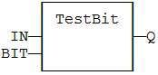
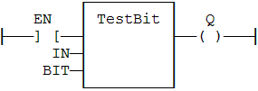

Function
Test a bit of an integer register.
|
Name |
Type |
Description |
|
IN |
ANY |
8- to 32-bit integer register. |
|
BIT |
DINT |
Bit number (0 = less significant bit). |
|
Name |
Type |
Description |
|
Q |
BOOL |
Bit value. |
Types LINT, REAL, LREAL, TIME and STRING are not supported for IN and Q. IN and Q must have the same type. In case of invalid arguments (bad bit number or invalid input type) the function returns FALSE.
In LD language, the operation is executed only if the input rung (EN) is TRUE. The output rung is the output of the function.
Q := TESTBIT (IN, BIT);

The function is executed only if EN is TRUE.
